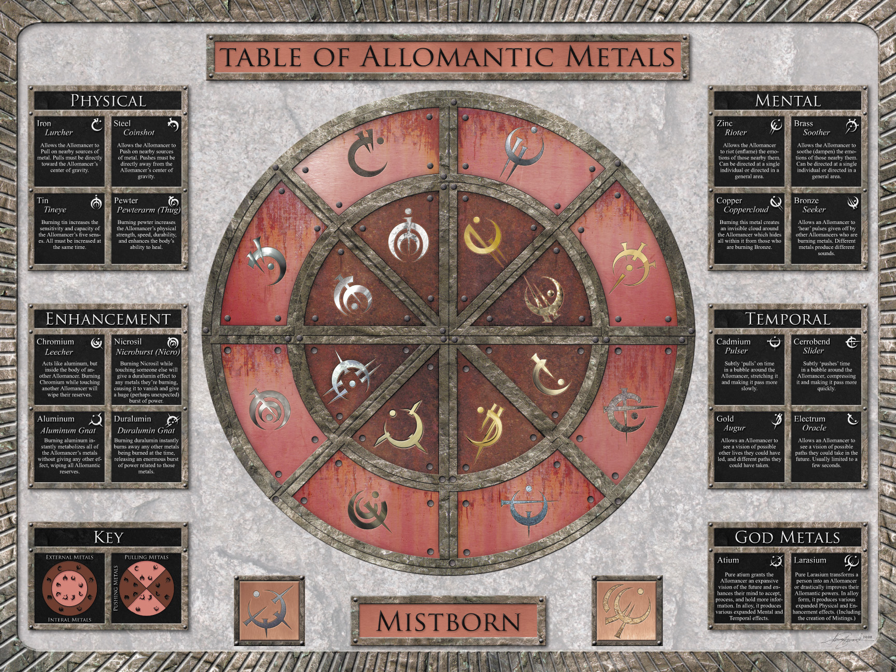

Mistborn
So What is a Mistborn???
Long ago, the Lord Ruler gave power to a selected few that when they consumed a metal, they would have the allomatic metal corrosponded with it:
This person is called a mistling. Simmilar to mistlings, mistborns have allomatic powers. But for them, they can acquire all of them when consuming any allomatic metals.